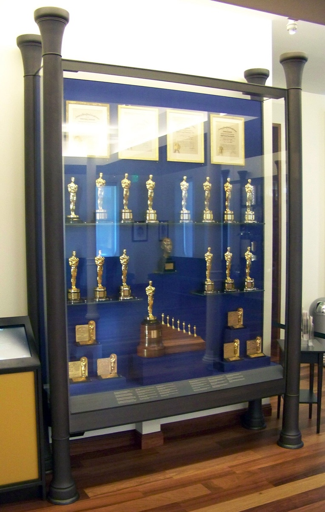
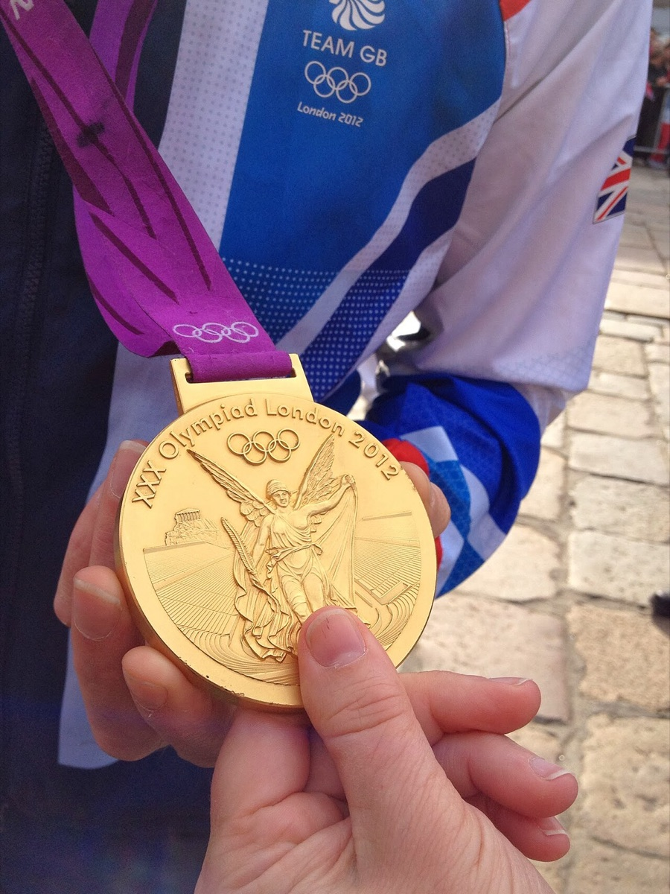

Testing for an Association Between Two Categorical Variables
Use a chi-square test (\(\chi^2\), said “kai-square”) of association to decide whether two categorical variables are related in the population.
What This Test Does
We compare the observed two-way table to what we would expect if the variables were not associated.
When to Use It
Both variables are categorical.
Data are summarized in a two-way table.
Goal is to test for association, not causation.
Null and Alternative
\[
H_0:\text{the variables are not associated}
\]
\[
H_a:\text{the variables are associated}
\]
The Five Steps of a Hypothesis Test
Every hypothesis test follows the same five steps. Here is what each step looks like for a chi-square test of association.
Step
In General
For a \(\chi^2\) Test of Association
1. Hypotheses
State \(H_0\) and \(H_a\) and choose \(\alpha\).
\(H_0\): not associated. \(H_a\): associated.
2. Test statistic
Compute the (standardized) test statistic from the sample.
Find expected counts, then \(\chi^2=\sum (O-E)^2/E\).
3. p-Value
Find the probability of a statistic at least this extreme if \(H_0\) is true.
Right-tail area of the chi-square curve with \(df=(r-1)(c-1)\).
4. Decision
If p-value \(< \alpha\), reject \(H_0\). Otherwise, fail to reject \(H_0\).
Same rule.
5. Conclusion
State what the decision means in the context of the problem.
Name both variables: is there (or is there not) convincing evidence they are associated?
~2 minMeet the Data
Oscar, Nobel, or Olympic Gold?


Photos via Wikimedia Commons: Walt Disney’s Oscars, Jim Heaphy, CC BY-SA 3.0 (source); Fleming’s Nobel medal, Osama Shukir Muhammed Amin, CC BY-SA 4.0 (source); 2012 Olympic gold, carlinmack, CC0 (source)
The Lock5 StudentSurvey (from our textbook’s datasets) is an in-class survey of 362 introductory statistics students, collected over several years. One question: which award would you most like to win — an Academy Award, a Nobel Prize, or an Olympic gold medal?
Oscar: 13.5 inches tall, 8.5 pounds, cast in bronze with a 24-karat gold finish (karat = gold purity; 24 = pure). Walt Disney still holds the record for most individual Oscars; 26 of them are on display at his family museum.
Nobel: until 1980 the medals were 23-karat gold; since then, 18-karat recycled gold.
Olympic “gold”: mostly silver, plated with at least 6 grams of gold.
Why it matters: each student lands in exactly one award category, so award preference is a categorical variable. Is it associated with whether a student’s Math or Verbal SAT score is higher?
Sources: Lock5Data StudentSurvey documentation; oscars.org; nobelprize.org; Walt Disney Family Museum; Olympedia.
Observed Counts Example
The StudentSurvey data compare award preference and which SAT score is higher.
Observed Table
Higher SAT
Academy
Nobel
Olympic
Total
Math
21
68
116
205
Verbal
10
45
95
150
Total
31
113
211
355
Proportions Within Each Row
Question
Does preferred award appear related to whether a student has the higher Math or Verbal SAT score?
Hypotheses (\(\alpha = 0.05\))
\(H_0\): award preference and which SAT score is higher are not associated. \(H_a\): award preference and which SAT score is higher are associated.
Idea Under \(H_0\)
If there is no association, then each award-preference column should have about the same Math/Verbal proportions as the overall sample.
Expected Counts
Expected counts come from row total times column total divided by the grand total.
This uses the assumption that the row and column variables are unrelated under the null hypothesis.
Example Cell
Expected count for Academy and Math:
\[
\frac{205 \cdot 31}{355} \approx 17.90
\]
The observed count is \(21\), a gap of \(3.1\) from the \(17.90\) expected under \(H_0\). The \(\chi^2\) statistic combines these gaps across all six cells.
Expected Table for the Example
Compute an expected count for every cell before finding the chi-square statistic.
Observed (Expected)
Higher SAT
Academy
Nobel
Olympic
Total
Math
21 (17.90)
68 (65.25)
116 (121.85)
205
Verbal
10 (13.10)
45 (47.75)
95 (89.15)
150
Total
31
113
211
355
Condition
All expected counts should be at least 5.
Counts, not percentages, must go in the table.
Randomization or independent sampling still matters.
Chi-Square Statistic
Each cell contributes a nonnegative amount (\(O\) = observed count, \(E\) = expected count). Large total contributions suggest association.
This is found by adding all six cell contributions in the table (Math row first, then Verbal).
Degrees of Freedom and p-Value
For a two-way table, the degrees of freedom depend on the number of rows and columns.
Degrees of Freedom
\[
df=(r-1)(c-1)
\]
\(r\) = number of rows, \(c\) = number of columns. For a \(2\times 3\) table:
\[
df=(2-1)(3-1)=2
\]
p-Value
The p-value is always a right-tail area because larger chi-square values mean a bigger departure from \(H_0\).
1. Go to lock5stat.com/StatKey; under Theoretical Distributions, choose Chi-square (a right-skewed curve used for \(\chi^2\) p-values).
2. Set df to 2 and check Right Tail.
3. Change the axis box to 2.21. The tail area is about 0.33.
\(\chi^2\approx 2.21\) with \(df=2\) gives p-value \(\approx 0.33\). Next: compare it to \(\alpha = 0.05\) and state the conclusion.
p-Value, Decision, and Conclusion
For the SAT example, \(df = 2\). The shaded right tail beyond the observed \(\chi^2 = 2.21\) is the p-value, about \(0.33\).
Decision: Since \(0.33 > 0.05\), we fail to reject \(H_0\). Conclusion: The data do not provide convincing evidence that award preference is associated with whether a student’s Math or Verbal SAT score is higher. (This does not prove the two variables are unrelated.)
Your Turn
Your Turn: Faculty Rank and Gender
A sample of faculty at one university was classified by rank (assistant, associate, or full professor) and gender. Is rank associated with gender? Use \(\alpha=0.05\).
Assistant
Associate
Full
Total
Male
20
30
33
83
Female
20
45
9
74
Total
40
75
42
157
Proportions Within Each Row
Questions
(a) State \(H_0\) and \(H_a\).
(b) Find all six expected counts. Is the condition met?
(c) Compute each \((O-E)^2/E\) and the \(\chi^2\) statistic.
(d) Find the df and use StatKey (Chi-square, Right Tail) for the p-value.
(e) State your conclusion. Which cells contribute the most?
Your Turn — Answers
Answers: Faculty Rank and Gender
(a) \(H_0\): rank and gender are not associated. \(H_a\): rank and gender are associated.
(b) Observed (Expected) Counts
Assistant
Associate
Full
Male
20 (21.15)
30 (39.65)
33 (22.20)
Female
20 (18.85)
45 (35.35)
9 (19.80)
Example: \(83\cdot 40/157\approx 21.15\). All expected counts are at least 5.
Since \(0.0003<0.05\), reject \(H_0\). There is very strong evidence that rank and gender are associated among faculty at this university. The Full Professor cells contribute most: far fewer women (9 vs. 19.8 expected) and more men (33 vs. 22.2) than independence (no association between the variables) predicts.
Special Case: \(2\times 2\) Tables
When each variable has two categories, a chi-square test and a two-proportion z test are closely related ways to analyze the same table.
Same Question
Both methods test whether the two categorical variables are related.
Both use the same observed \(2\times 2\) table.
For the same data, they lead to the same two-tail conclusion.
Interpretation
The z test is often introduced first for two proportions.
The chi-square method is more general because it extends beyond two categories.
For larger tables, use chi-square rather than a z test.
What You Can and Cannot Conclude
A significant result shows association, but it does not automatically show causation.
Association
The variables appear related in the population.
Not Direction
The test does not tell you which variable explains the other.
Not Causation
Without random assignment, a relationship may be due to confounding.
What to Remember
A chi-square test of association compares observed counts to expected counts from independence (no association between the two variables).
Core Steps
State \(H_0\) and \(H_a\).
Find each expected count.
Compute \(\chi^2=\sum (O-E)^2/E\).
Use \(df=(r-1)(c-1)\) and find the right-tail p-value.
If p-value \(< \alpha\), reject \(H_0\); otherwise, fail to reject \(H_0\).
State the conclusion in the context of the problem.